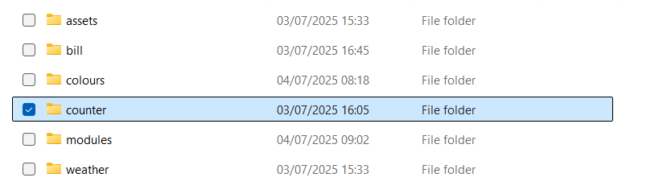
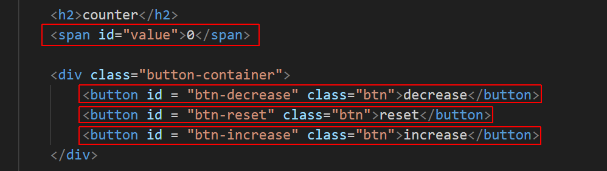

Project Description
Create an increment and decrement counter that changes the value of the number displayed on the web page.
Your project folder
In your 📁 js folder is a sub-folder named 📁 counter that contains a single file:
- An index.html file contains the HTML and CSS.
Open the index.html file in VS Code and a web browser.
In the index.html file, you can see a counter output and three buttons, each with a unique id.
Creating the JavaScript code
Follow these steps:
- At the bottom of index.html, add JavaScript code to create references to the following four elements in the web page:
- The value counter output
- The btn-decrease button
- The btn-reset button
- The btn-increase button
- Create a counter variable named count and initialise it to zero.
- Write three separate functions: one to decrease the counter, one to reset it to zero, and one to increase it.
- Attach event listeners to the buttons.
- Update the colour of the displayed number on the web page based on the value: green for positive and red for negative.
Save your index.html file with the JavaScript code, view the web page in your browser and verify the three buttons work correctly.